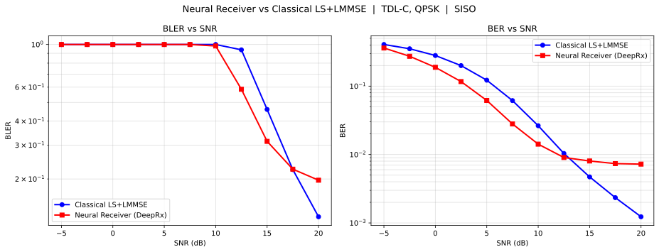
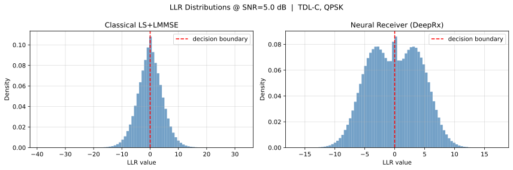
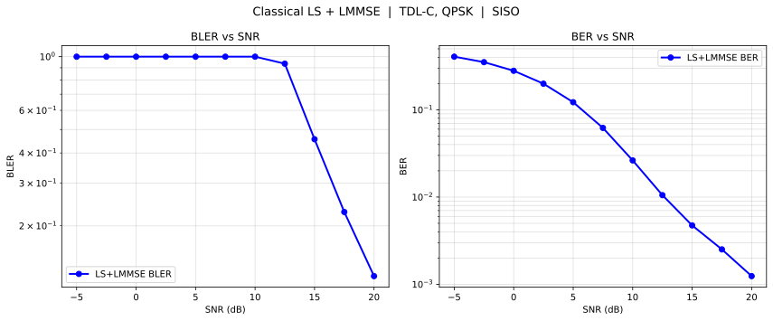

I built a DeepRx-style neural receiver and measured it against a classical LS+LMMSE baseline on the same Sionna TDL-C link.
I built this project around one AI-PHY engineering question: can a DeepRx-style neural receiver learn enough from a Sionna-modeled 5G NR TDL-C channel to beat a classical LS+LMMSE receiver under the same link conditions?
Classical 5G receivers separate channel estimation, equalization, and demapping. Neural receivers test whether those steps can be learned jointly when the receiver sees the same channel conditions. I built this repo to make that comparison reproducible, measured, and honest.
AI-native radio research needs controlled baselines. Neural PHY claims are easy to overstate. This evidence pack compares neural and classical receivers on the same modeled channel, with the same SNR sweep, committed artifacts, and visible limits.
The neural receiver wins in the moderate-SNR region, improves BLER at 12.5 dB, and passes ONNX parity. The result is bounded: classical remains competitive at high SNR, and this is simulated link evidence only.
I used the same TDL-C channel setup for the neural and classical paths, preserved the deterministic pilot fix, and committed the plots and JSON artifacts that support the conclusion.

The neural receiver improves BER around 5-10 dB while high-SNR limits remain visible.
Open artifactBLER improves from 0.938 to 0.585 at 12.5 dB.
Open artifact
The LLR plot shows how the receiver confidence distribution changes at the measured point.
Open artifact
The LS+LMMSE baseline is preserved as a serious receiver reference, especially at high SNR.
Open artifactNeural gains are strongest around 5-12.5 dB. At high SNR, the classical receiver remains competitive, so this is not a claim that neural receivers dominate every operating point.
The deterministic pilot RNG bug was found and fixed. ONNX parity passes, and the recorded suite is 31/31 tests passing. These details matter because they make the curves reproducible and auditable.
| Layer | What it does |
|---|---|
| AI-PHY receiver experiment | Tests learned receiver behavior against a classical baseline. |
| Sionna-modeled 5G NR link | Uses TDL-C/QPSK/CP-OFDM/SISO link conditions. |
| Classical receiver baseline | LS pilot estimation, LMMSE equalization, max-log soft demapping. |
| DeepRx-style neural receiver | Residual CNN that learns joint receiver behavior. |
| BER/BLER evidence pack | Measured curves and tables across SNR. |
| ONNX parity export check | Verifies export correctness against ONNXRuntime. |
| Static dashboard | Packages measured evidence, boundaries, and artifacts for review. |
| Claim | What is true instead | Limit it protects |
|---|---|---|
| Live 5G deployment | No, this is simulated link evidence. | Prevents production overclaiming. |
| SDR validated receiver | No, no hardware-loop validation yet. | Keeps hardware claims honest. |
| O-RAN/gNB integration | No, no RAN integration is claimed. | Separates link evidence from RAN integration. |
| NVIDIA Aerial integration | No, this uses Sionna, not Aerial. | Avoids vendor integration theater. |
| MIMO receiver | No, this is SISO unless implemented otherwise. | Keeps antenna scope clear. |
| Higher-order QAM / LDPC-coded system | No, QPSK and current uncoded scope only as implemented. | Avoids unmeasured PHY claims. |
| Production-ready AI-RAN component | No, this is a research-grade evidence pack. | Preserves deployment boundary. |
Link configuration, receiver paths, evidence artifacts, and known limits.
Open technical brief{kind=link}
{kind=link}
{kind=link}